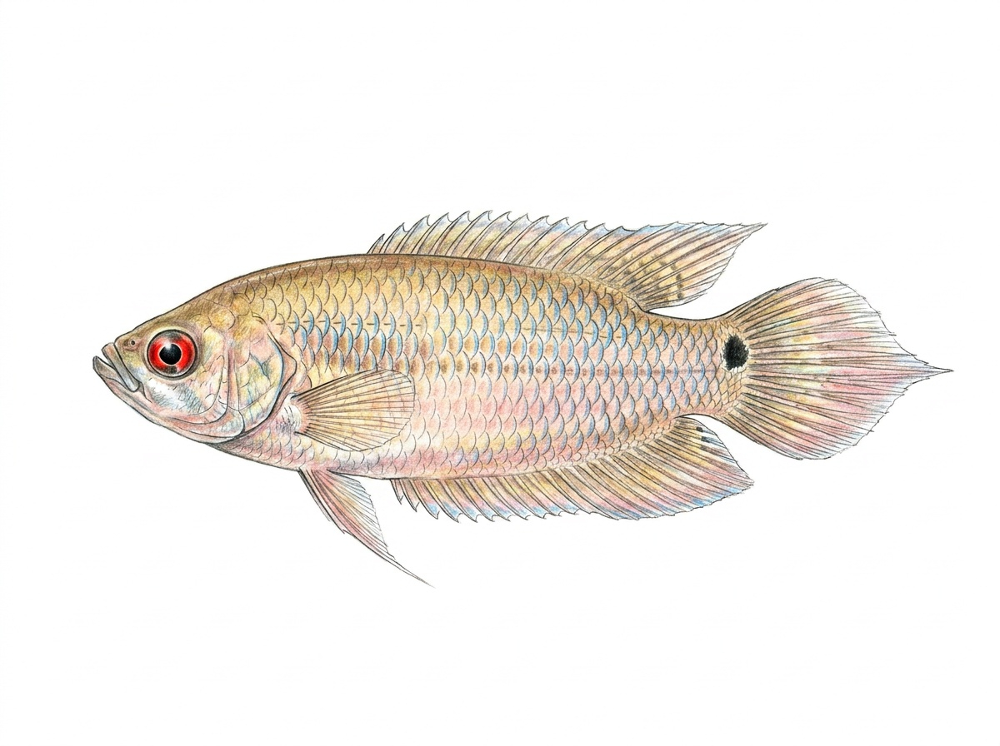

Spike-tailed Gourami
Pseudosphromenus cupanus
The Spike-tailed Gourami is a small freshwater fish native to Sri Lanka and southern India. In Sri Lanka, it is found in ponds, marshes, rice fields, irrigation canals, slow-moving streams, and other calm freshwater habitats with dense aquatic vegetation. It prefers shallow, well-vegetated waters where it can shelter among submerged plants and floating vegetation. Like other gouramies, it possesses a specialized labyrinth organ that enables it to breathe atmospheric air, allowing it to survive in oxygen-poor environments. This peaceful and shy species is usually found alone or in pairs and feeds on small aquatic insects, insect larvae, tiny crustaceans, worms, algae, and other microscopic aquatic organisms. During the breeding season, the male constructs a bubble nest beneath floating vegetation and actively guards the eggs and newly hatched fry. The Spike-tailed Gourami is an important native species in Sri Lanka’s freshwater wetlands and is appreciated by aquarium hobbyists for its attractive appearance, calm temperament, and fascinating breeding behaviour.